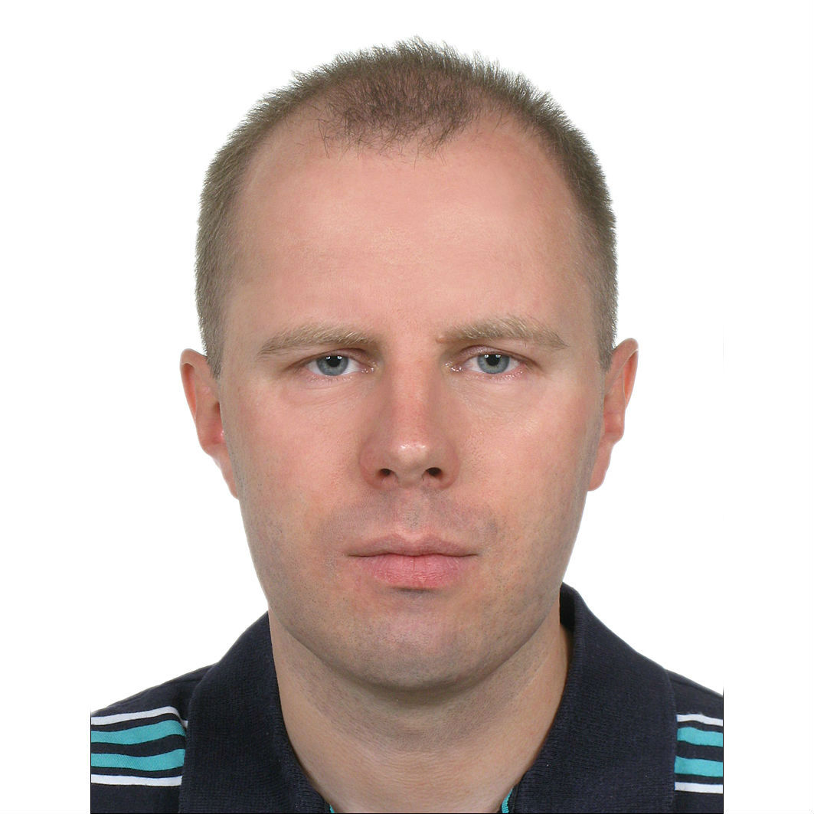

Work Experience
- 09/2021 - now
- Scala Developer (Contract) - HMRC | London, UK
- Valuation Office Agency microservices support and development.
- Scala, Cats, Play Framework, Akka, MongoDB
- 09/2020 - 09/2021
- Senior Java/Scala Developer - iPlato Healthcare | London, UK
- https://mygp.com back-end microservices
- AWS, Microservices, Docker, Scala, Java 11, Akka, Akka Http, elastic4s, DynamoDB, Debezium, Spring Boot/Cloud, Consul, Elasticsearch, Kafka, RabbitMQ, MySQL
- 08/2019 - 02/2020
- Senior Software Engineer - Asset Control | London, UK
- Scala, Java, AWS, Kubernetes, Docker, Hazelcast, Apache Spark, Akka, Play, Kafka, Cassandra
- 04/2018 - 06/2019
- Senior Java Software Engineer - Tantalum Corporation | London, UK
- Telematics Platform for tracking vehicles.
- Java 8, Microservices, AWS, Spring Boot, Spring Cloud, Consul, Marathon, Kafka, Cassandra
Implemented by me the following microservices:
- api-subscriptions - Asynchronous integration with company ATT to synchronize users profiles and subscriptions
- svc-ecosystems-gateway - Integration with Harman endpoints to get device status/change Wi-Fi settings
- svc-trip-batch - Converting trip telematics data to CSV format to calculate driving score by Octo Telematics
- api-device-administration - REST API to get device data, associate with user, enable Wi-Fi, cancel registration
- api-device-status - REST API to get current comprehensive device status and status changes history
- api-admin-router - Entry point for all REST APIs used by Support Portal
- cmd-sender - Application to send in free form messages and push notifications to users
- sls-monitoring - Microservices monitoring Lambda deployed by Serverless framework https://serverless.com
- 07/2017 - 03/2018
- Scala Developer (Contract) - EileanTech Ltd | London, UK
- Implemented Archipelago framework integration for Database, JMS, HTTP, JSON, XML and sort/aggregate/transform components.
- Scala, Akka, Slick, scalatest, SBT, Git, JMS, JSON, XML
- 02/2017 - 06/2017
- Software Engineer - 10x Banking | London, UK
- Java 8, Maven, AWS, Amazon SQS, DynamoDB, Activiti workflow
- 02/2014 - 01/2017
- Senior Java Developer - Freelance
- Java 8, Camel, Spring, JPA, Spring MVC, Scala, Akka, SBT, Play framework, JIRA plugin
- Dashboard to monitor and control Wind Turbines. (Java 8, Spring Boot, SOAP, AngularJS)
- Yellowfin BI plugins views for REST APIs (Java 8, yellowfinbi-7.2, retrofit-2, okhttp-3, gson)
- 09/2013 - 01/2014
- Senior Java Developer - Epam Systems | Kyiv, Ukraine
- Implemented new features for bank trades processing. Improved test coverage.
- IBM Java 5, Maven, Spring, Hibernate, JMS, XML, XSLT, JUnit, TDD, Agile
- 01/2012 - 05/2013
- Senior Java Developer - Ciklum | Kyiv, Ukraine
- Implemented from scratch Players Campaign management solution.
- Java 7, Oracle, Hibernate, Spring, JPA, REST, ActiveMQ, Tapestry, TDD, Agile
- 12/2007 - 01/2012
- Senior Java Developer - Thomson Reuters | Kyiv, Ukraine
- Implemented new features for Thomson Reuters commercial portals and internal services.
- Java 6-7, Hibernate, JPA, Spring, Web Services, Maven, JUnit, TDD, Agile
- 12/2006 - 12/2007
- Senior Java Developer - Softline | Kyiv, Ukraine
- Developed web-application for managing profiles, import/export XML by HTTPS, FTP.
- Java 6, J2EE, MULE ESB, Web Services, JUnit, Cactus, Ant
- 02/2006 - 12/2006
- Java Developer - Luxoft | Kyiv, Ukraine
- Developed web-application for internal use on ChNPP. It is designed to work with an electronic archive of documents, and integration with the monitoring system of object "Shelter".
- Java 5, J2EE, Servlets, JSP, Struts, Oracle PL/SQL, Oracle CM SDK
- 03/2005 - 12/2005
- PHP Developer - MitriDAT | Kyiv, Ukraine
- https://smsportal.media24.no - SMS Portal for bulk message sending, postponed sending, websites integration.
- PHP, DHTML, MySQL, XML, XSL
Education
- 04/2017
- Coursera | online
- Big Data Analysis with Scala and Spark (License KSUENLP7B886)
- 1997 - 2002
- Ternopil Ivan Puluj National Technical University | Ternopil, Ukraine